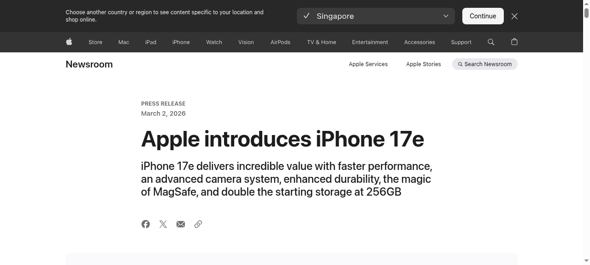

Apple 推出 iPhone 17e：強大且實惠的新選擇
Apple Introduces iPhone 17e: A Powerful and Affordable Addition
Apple 今日宣布推出全新的 iPhone 17e，為 iPhone 17 系列增添一款強大且實惠的選擇。這款新機型延續了 Apple 一貫的創新精神，配備先進的相機系統、更長的電池續航力，以及提升的效能表現。Apple 表示，iPhone 17e 的設計旨在讓更多消費者能夠體驗最新的 iPhone 技術，同時保持親民的價格定位。此款新機的推出也顯示 Apple 在中階智慧型手機市場的持續布局。
Apple today announced the new iPhone 17e, a powerful and affordable addition to the iPhone 17 lineup. This new model continues Apple's tradition of innovation, featuring an advanced camera system, longer battery life, and improved performance. Apple stated that the iPhone 17e is designed to let more consumers experience the latest iPhone technology while maintaining an accessible price point. The launch also demonstrates Apple's continued strategy in the mid-range smartphone market.